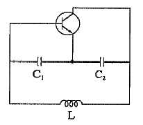
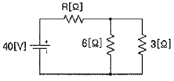
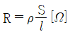
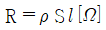
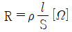
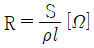
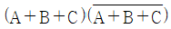
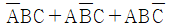
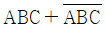
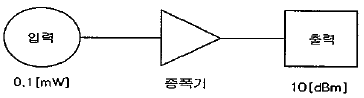

방송통신기능사 (2014-10-04 기출문제)
1과목: 임의 구분
1. 다음 회로의 명칭은?

- 빈브릿지 발진 회로
- 하틀리 발진 회로
- 콜피츠 발진 회로
- 이상형 발진 회로
(정답률: 알수없음)

2. 10[Ω]의 저항 10개를 직렬로 연결했을 때의 전체 저항값은 병렬로 연결했을 때의 전체 저항 값은 몇 배가 되는가?
- 10배
- 100배
- 50배
- 500배
(정답률: 알수없음)
3. 되먹임(또는 궤환) 발진회로에서 발진이 일정한 진폭 전압을 유지하여야 지속적인 발진 상태가 된다. 발진 지속 조건을 바르게 나타낸 것은? (단, A는 증폭 회로의 이득이고, β는 되먹임률이다.)
- βA = 0
- βA ＞ 0
- βA ＜ 1
- βA = 1
(정답률: 알수없음)
4. 다음 중 A급 증폭기에 대한 설명으로 옳은 것은?
- 콜렉터 전류는 입력 신호의 전주기 동안 흐른다.
- 일그러짐이 매우 크다.
- 출력 전력이 매우 크다.
- 동작은 차단점에 바이어스를 가해 동작시킨다.
(정답률: 알수없음)
5. PCM의 변환 과정이 아닌 것은?
- 표본화
- 양자화
- 부호화
- 암호화
(정답률: 알수없음)
6. 다음 중 발광 다이오드의 특성으로 옳지 않은 것은?
- 수명이 길다.
- 저렴한 가격으로 이용할 수 있다.
- 넓은 온도 범위에서 동작한다.
- 분사 레이저 다이오드에 비하여 데이터 전송률이 높다.
(정답률: 알수없음)
7. 다음 회로에서 전류가 10[A] 흐른다고 하면 R[Ω]는 얼마인가? (단, 합성저항은 4[Ω] 이다.)

- 2[Ω]
- 4[Ω]
- 6[Ω]
- 8[Ω]
(정답률: 알수없음)
8. 자체 인덕턴스 L[H]인 코일에 100[V], 60[Hz]의 교류 전압을 가해서 10[A]의 전류가 흘렀다. 이 코일의 자체 인덕턴스는?
- 17.7 [mH]
- 26.5 [mH]
- 27.7 [mH]
- 31.5 [mH]
(정답률: 알수없음)
9. 다음 중 직류 증폭기에서 저주파 잡음을 줄이기 위해 필요한 보상은?
- 직류 보상
- 저역 보상
- 고역 보상
- 드리프트 보상
(정답률: 알수없음)
10. i = Imsinωt[A]로 나타내는 사인파 전류의 최대값이 Im일 때, ωt는 어떤 값에서 최대값을 갖는가?
- π
- π/2
- π/3
- π/4
(정답률: 알수없음)
11. 트랜지스터 표시에서 화살표가 의미하는 것은?
- 이미터 영역에서 전자 흐름의 방향
- 이미터 영역에서 정공 흐름의 방향
- 이미터 영역에서 다수 캐리어 흐름의 방향
- 이미터 영역에서 소수 캐리어 흐름의 방향
(정답률: 알수없음)
12. 도체의 길이를 l[m], 단면적을 S[m2], 도체의 고유저항을 ρ[Ω·m]라면 도체의 저항 R[Ω]은 어떻게 나타내는가?




(정답률: 알수없음)
13. 저항과 리액턴스로 구성된 RL 직렬 회로의 시상수 계산식은?
- RL
- R/L
- L/R
- 1/RL
(정답률: 알수없음)
14. 비오-사바르의 법칙은 어떤 관계를 나타낸 것인가?
- 기전력과 자속의 변화
- 전위와 전기장 세기
- 전류와 자기장의 세기
- 기전력과 회전수
(정답률: 알수없음)
15. 다음 중 이상적인 연산 증폭기에 관한 사항으로 틀린 것은?
- 전압이득은 무한대이다.
- 출력저항은 0 이다.
- 입력저항은 무한대이다.
- 대역폭은 일정하다.
(정답률: 알수없음)
16. FM신호를 검파하기 위한 주파수 복조기에 해당되지 않는 것은?
- 링 복조기
- 포스터 실리 복조기
- 비 검파기
- PLL 복조기
(정답률: 알수없음)
17. 입·출력 제어방식 중 DMA와 Channel에 의한 방식의 공통점은?
- 한 개의 블록만을 입출력할 수 있다.
- 여러 개의 블록을 입출력할 수 있다.
- CPU에 의한 입출력제어방식이다.
- CPU와는 별도의 명령어를 가지고 있다.
(정답률: 알수없음)
18. 개인용 또는 업무용 등 여러 분야에서 일반적으로 사용되는 컴퓨터는?
- 아날로그 컴퓨터(Analog Computer)
- 디지털 컴퓨터(Digital Computer)
- 하이브리드 컴퓨터(Hybrid Computer)
- 워크스테이션(Workstation)
(정답률: 알수없음)
19. CPU의 구성장치들 사이에서 자료 및 제어가 전달될 수 있는 신호의 전달통로 기능을 수행하는 것은?
- 제어장치
- 레지스터
- 내부버스
- 연산장치
(정답률: 알수없음)
20. 다음 중 스프레드시트의 메뉴 표시줄에 대한 설명으로 잘못된 것은?
- 실행할 수 있는 주 메뉴들이 나타나 있는 곳이다.
- 메뉴를 마우스로 클릭하면 그에 따른 부 메뉴가 나타난다.
- 실제 작업이 이루어지는 곳으로 문서를 작성하는 종이 역할을 한다.
- 오른쪽 끝에 제목 표시줄과 같은 역할을 하는 창 제어 단추가 있다.
(정답률: 알수없음)
2과목: 임의 구분
21. 논리식

의 결과는?- 1
- 0


(정답률: 알수없음)
22. 다음 중 입출력채널에 대한 설명으로 옳지 않은 것은?
- 고속 입출력 장치에는 셀렉터(Selector) 채널을 사용한다.
- 저속 입출력 장치에는 멀티플렉서(Multiplexer) 채널을 사용한다.
- 중앙처리장치의 명령어에 따라 의존적으로 동작한다.
- 여러 개의 블록을 입·출력 할 수 있다.
(정답률: 알수없음)
23. 데이터베이스 관리자(DBA : Data Base Administrator)가 하는 일로 틀린 것은?
- 데이터베이스 설계 및 운영
- 데이터베이스 시스템 관리
- 데이터베이스 판매
- 데이터베이스 문서화
(정답률: 알수없음)
24. 다중 프로그램에서 하나의 자원을 공유하여 여러 프로세서에서 동시에 사용하려 할 때 이용 불가능한 자원을 무한정 기다리게 되는 현상을 무엇이라 하는가?
- 스풀링
- 교착상태
- Hold 상태
- Context switch
(정답률: 알수없음)
25. (01101011.1111)2를 16진수로 변환한 값은?
- (C3.15)16
- (C3.F)16
- (6B.15)16
- (6B.F)16
(정답률: 알수없음)
26. 다음 중 데이터베이스에서 데이터 조작 언어에 해당되지 않은 것은?
- SELECT
- UPDATE
- DELETE
- DROP
(정답률: 알수없음)
27. 중계소 설치가 곤란한 지역으로 전파 난시청 지역 해소를 위해 저출력 중계를 목적으로 도시 외곽지역에 설치하는 것은?
- CATV
- 강니 중계소
- 무지향성 안테나
- 전용회선
(정답률: 알수없음)
28. 다음 중 신호크기와 밀접한 관계가 있는 파형왜곡 성분 측정에 속하지 않는 것은?
- 미분위상
- 미분이득
- 휘도 비직진성
- 색도대 휘도 특성
(정답률: 알수없음)
29. CATV 증폭기나 분기기, 분배기 등을 설치한 후 유휴단자가 사용회선에 영향을 미치지 않도록 하려면 몇 [Ω] 으로 종단하여야 하는가?
- 50 [Ω]
- 75 [Ω]
- 300 [Ω]
- 600 [Ω]
(정답률: 알수없음)
30. 중파 라디오 방속국(표준방송, AM)의 주파수는 526.5~1,606.5[kHz] 사이에 폭이 1,080[kHz] 이다. 최대 사용 채널수는?
- 100개
- 617개
- 120개
- 83개
(정답률: 알수없음)
31. 다음 중 DMB의 특징이 아닌 것은?
- 디지털 전송방식이다.
- 이동 및 고정 수신이 가능하다.
- 라디오, 문자 정보, 데이터 전송 등이 가능하다.
- 일반 지상파 디지털방송에 비해 화질이 우수하다.
(정답률: 알수없음)
32. 방송국의 지원설비 중 순간 정전에 대비한 예비 전원설비는?
- AVR
- Power Supply
- UPS
- Adapter
(정답률: 알수없음)
33. 측정 신호의 신호 레벨의 값이 원래 신호의 –3[dB]이라면 원래 신호는 측정 신호의 몇 배인가?
- 1
- 2
- 3
- 4
(정답률: 알수없음)
34. 7C-FL-SS형 동축 케이블의 명칭에서 C가 의미하는 것은?
- 임피던스
- 곡률 반경
- 절연체
- 외부 도체의 구조
(정답률: 알수없음)
35. 동축케이블에 비해 광섬유케이블이 갖고 있는 장점으로 맞지 않는 것은?
- 선로 접속이 쉽다.
- 전송 손실이 적다.
- 대용량 정보 전송이 가능하다.
- 직경이 가늘어 가볍다.
(정답률: 알수없음)
36. 컬러 TV에서 색의 밝음 정도를 표현하는 것은?
- 채도
- 명도
- 해상도
- 색농도
(정답률: 알수없음)
37. 미국의 디지털 TV 표준화기구에서 제안한 데이터 방송의 표준 방식은?
- ACAP
- DVB-MHP
- ATVEF
- ISDB-T
(정답률: 알수없음)
38. 우리나라 지상파 디지털방송(DTV)의 1채널당 주파수 대역폭은?
- 5 [MHz]
- 6 [MHz]
- 7 [MHz]
- 8 [MHz]
(정답률: 알수없음)
39. 국제 상업 위성인 INTELSAT에 대한 설명으로 적합하지 않은 것은?
- 지구의 적도 상공에 위치한다.
- 지구와의 거리는 약 36,000[km] 정도이다.
- 전 세계를 3개의 위성으로 커버할 수 있다.
- 방송용으로는 사용할 수 없다.
(정답률: 알수없음)
40. 다음 그림에서 증폭기의 증폭도는 얼마인가?

- 10
- 50
- 100
- 200
(정답률: 알수없음)
3과목: 임의 구분
41. 방송채널 중 1개 이상의 TV 신호 수신을 목적으로 하는 수신안테나는?
- 채널전용 안테나
- 협대역 안테나
- 고주파대역 안테나
- 광대역 안테나
(정답률: 알수없음)
42. 라디오 수신기에서 어느 정도 미약한 전파까지 수신할 수 있는지의 능력을 표시하는 것은?
- 감도
- 선택도
- 안정도
- 충실도
(정답률: 알수없음)
43. 다음 중 지상파 방송의 항목별 특징을 나타낸 것이다. 잘못된 것은?
- 방송국 규모 : 대규모
- 전송 형태 : 양 방향
- 대상 : 광역성 불특정 다수
- 전송 매체 : 자유 공간
(정답률: 알수없음)
44. 다음 중 TV 영상 신호에 대한 설명으로 적합하지 않은 것은?
- 주자선의 수가 많을수록 영상의 정밀도가 향상된다.
- 1초 동안 전송되는 영상의 수가 많을수록 화면의 플리커(Flicker)가 증가한다.
- TV의 주사방식은 수평주사와 수직주사가 있다.
- 2필드로 1프레임을 구성하는 주사방식을 2:1 비월주사라 한다.
(정답률: 알수없음)
45. CATV 방송국에서부터 분배 센터까지의 구간은?
- 초간선(Super Trunk Line)
- 간선(Trunk Line)
- 분배선(Distribution Line)
- 인입선(Subscriber Line)
(정답률: 알수없음)
46. 종합유선방송국설비와 전송선로설비의 분계점이 아닌 것은?
- 진폭변조기와 동축케이블의 최초 접속점
- 광송신기와 광케이블의 최초 접속점
- 주파수변조기와 광송신기의 최초 접속점
- 진폭변조기와 광송신기의 최초 접속점
(정답률: 알수없음)
47. 방송법의 제정 목적에 적합하지 않은 것은?
- 사업자의 권익보호
- 국민문화의 향상 도모
- 방송의 자유와 독립 보장
- 방송의 발전과 공공의 복리 증진
(정답률: 알수없음)
48. ATSC 디지털 지상파 텔레비전 방송에서 영상·음성·데이터 방송 신호 및 시스템 정보 스트림을 하나의 전송 스트림으로 다중화한다. 이 다중화의 기술적 조건은?
- MPEG-2 국제 표준인 ISO/IEC 13818-1을 따른다.
- ITU-T의 국제표준인 X.25를 따른다.
- JTC1/SC29/WG11을 따른다.
- IEEE/802.1~9를 따른다.
(정답률: 알수없음)
49. 다음 중 방송의 공적책임에 관한 설명으로 옳지 않은 것은?
- 방송은 인간의 존엄과 가치 및 민주적 기본질서를 존중하여야 한다.
- 방송은 타인의 명예를 훼손하거나 권리를 침해하여서는 아니된다.
- 방송은 범죄 및 부도덕한 행위나 사행심을 조장하여서는 아니된다.
- 방송은 국제적인 국위선양에 대하여 대외적으로 전송되어야 한다.
(정답률: 알수없음)
50. 입력신호 에너지를 2개 이상으로 균등하게 분배하는 장치를 무엇이라 하는가?
- 분배기
- 분기기
- 직렬단자
- 증폭기
(정답률: 알수없음)
51. 다음 중 방송법에 의한 방송사업자에 속하지 않는 것은?
- 지상파방송사업자
- 종합유선방송사업자
- 구내방송사업자
- 방송채널사용사업자
(정답률: 알수없음)
52. 유선방송시설의 설치도면 작성에 있어서 필요한 약호 중 감쇠기 표시는?
- ATT
- BTT
- CTT
- KTT
(정답률: 알수없음)
53. 다음 중 전파법령에서 방송국의 개설허가의 유효기간은?
- 1년
- 2년
- 5년
- 무기한
(정답률: 알수없음)
54. 관로의 매설기준에서 관로는 가스 등 다른 매설물과 얼마 이상 떨어져 매설하여야 하는가?
- 30[cm] 이상
- 50[cm] 이상
- 90[cm] 이상
- 1[m] 이상
(정답률: 알수없음)
55. 다음 중 중계유선방송사업이나 음악유선방송사업을 할 수 있는 자는?
- 외국인 또는 외국의 정부
- 미성년자 또는 한정치산자
- 파산선고를 받은 자로서 복권되지 아니한 자
- 중계유선방송사업의 허가 또는 등록이 취소된 후 3년이 경과된 자
(정답률: 알수없음)
56. 2개의 음이 동시에 존재할 때, 한 쪽의 음이 다른 한쪽의 음에 의해 은폐되어 들리지 않는 현상은?
- 하울링 현상
- 바이노럴 현상
- 하스 현상
- 마스킹 현상
(정답률: 알수없음)
57. 텔레비전 공동시청 시설에서 증폭기에 요구되는 기준이 아닌 것은?
- TV 방송신호를 균일하게 증폭할 수 있을 것
- 공급되는 전원을 수동으로 연결 또는 차단할 수 있을 것
- 수동으로 출력신호의 세기를 조정할 수 있을 것
- 주파수를 임의로 변환시킬 수 있을 것
(정답률: 알수없음)
58. 다음 중 유선방송의 전송선로 설비에 해당되는 것은?
- 케이블, 분배기
- 변복조기, 전압보호기
- 분기기, 카메라
- 마이크로폰, 중계장치
(정답률: 알수없음)
59. 수신안테나로부터 들어오는 각 채널 별 TV 방송 신호의 세기 차이가 몇 [dB] 이상일 때 레벨조정기를 사용하는가?
- 1 [dB]
- 3 [dB]
- 6 [dB]
- 10 [dB]
(정답률: 알수없음)
60. 다음 중 프로그램 제작설비에 속하지 않는 것은?
- 중계설비
- 녹음녹화설비
- 영상조정설비
- 스튜디오 제작설비
(정답률: 알수없음)